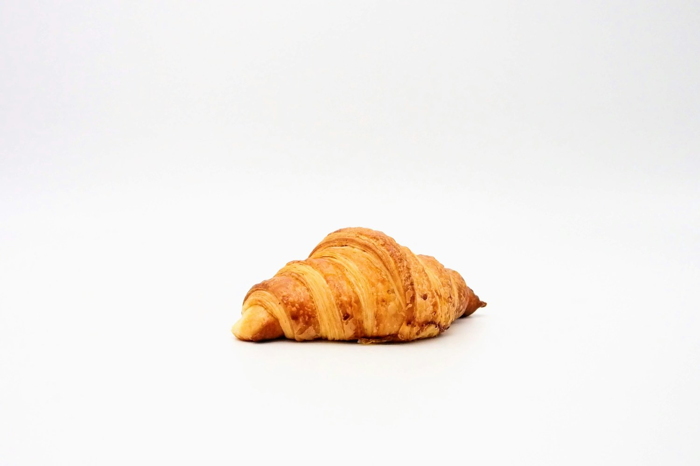
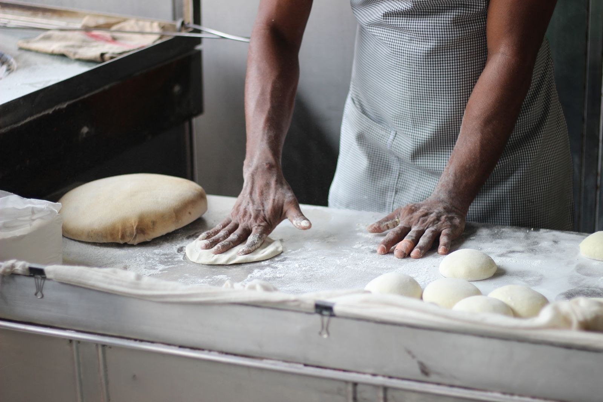

GOED.GEBAKKEN.

Kijk op de toonbank
Brood, koffie en iets lekkers.
Voor hier. Voor onderweg. Voor thuis.
GOED BROODGEEF JE TIJD.
Geen haast.
Wel een korst.
Deeg maken. Laten rusten. Vormen. Bakken. Wat eenvoudig lijkt, krijgt hier de tijd.
We houden de keuze overzichtelijk. Goed brood voor elke dag, iets zoets voor tussendoor en koffie erbij.

Bestelling.
Voor één brood, een lunch of een groep. Kies wat je wilt meenemen en zet de aantallen en je wensen erbij.